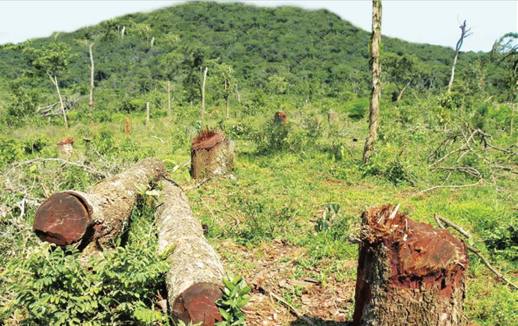

Uharibifu wa misitu
Matumizi makubwa ya nishati itokanayo na miti ambayo ni kuni na mkaa huchangia katika kuharibu mazingira. Mfano, matumizi makubwa ya nishati ya kuni na mkaa yanasababisha ukataji miti ovyo kwa ajili ya kupata kuni na kuchoma mkaa. Ukataji miti ovyo kwa ajili ya kuni na mkaa huchangia uharibifu wa misitu. Kitendo cha kukata miti ovyo husababisha maeneo ambayo yalikuwa na miti kubaki wazi. Ardhi isiyokuwa na miti ni rahisi kuharibiwa na mmomonyoko wa udongo na hatimaye hupoteza rutuba yake. Kielelezo namba 5 kinaonesha msitu ulioharibiwa kwa kukata miti ovyo.

Vilevile, uchomaji wa msitu ni chanzo cha uharibifu wa mazingira. Misitu ni makazi ya baadhi ya viumbehai kama